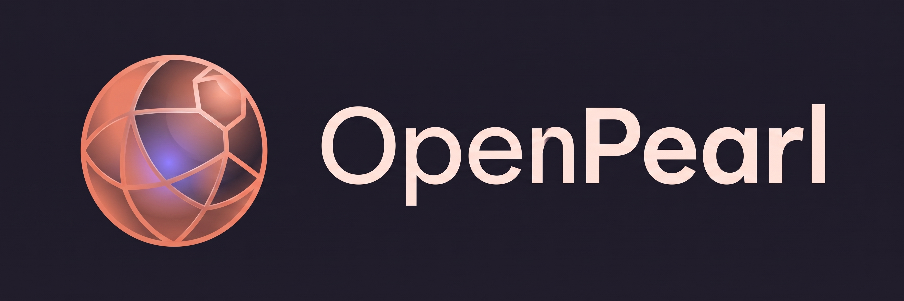

OpenPearl
From ticket to auto-merge. Minimal GitHub workflow.
OpenPearl reads a ticket, implements it, opens a PR, reviews it in a loop and auto-merges. If it isn't confident, it hands the PR to a human.
How it works
When an owner, member, or collaborator opens an issue, .github/workflows/issue-to-pr.yml runs:
- The agent implements the issue and opens a PR.
- The agent CLI runs two review/fix rounds.
- The agent CLI runs the eval in
.github/workflows/evals/pr-ready-to-merge.md. OnYESthe PR is squash-merged; otherwise it stays open for a human.
See the README for setup instructions.